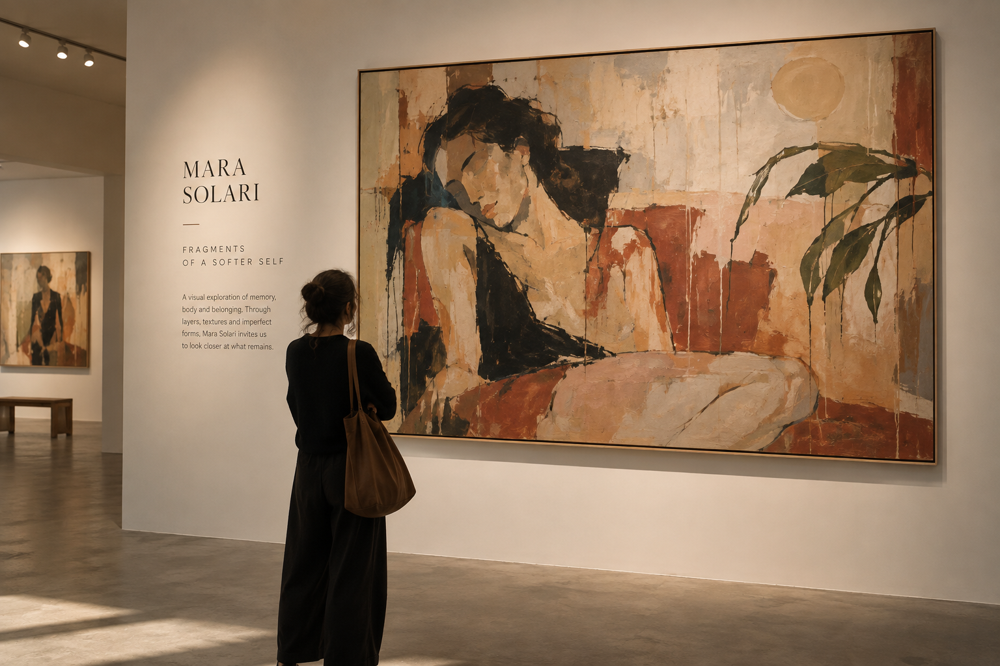
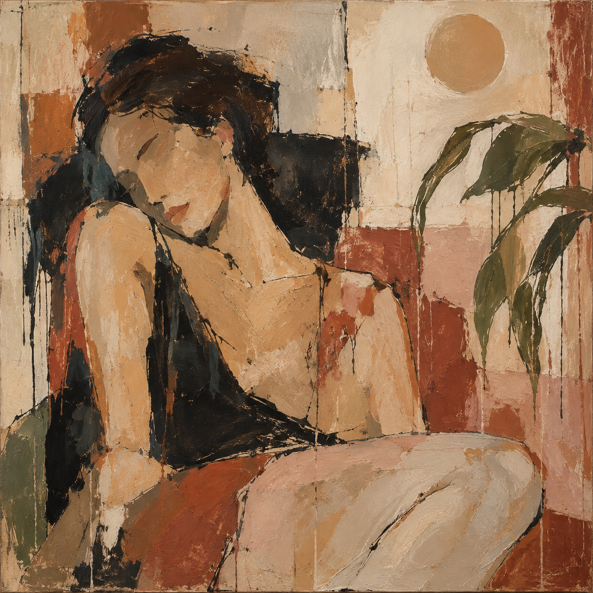
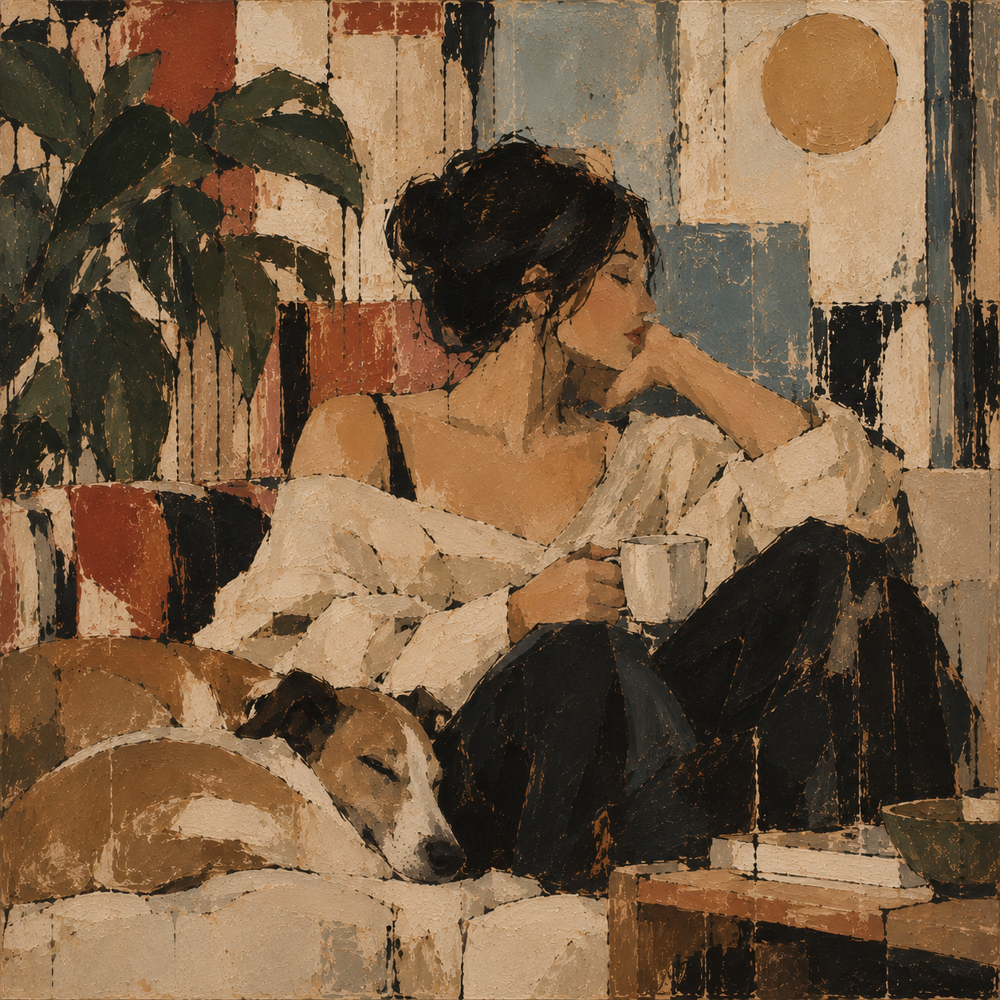
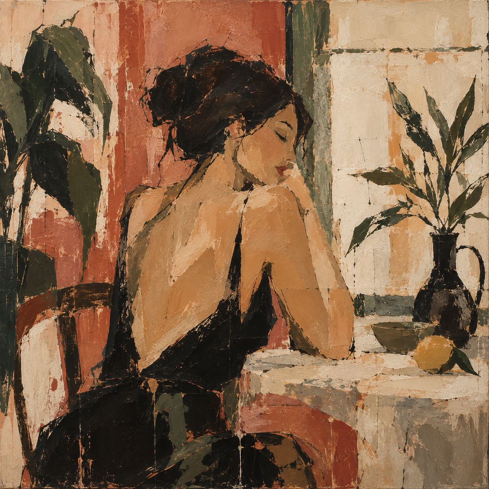
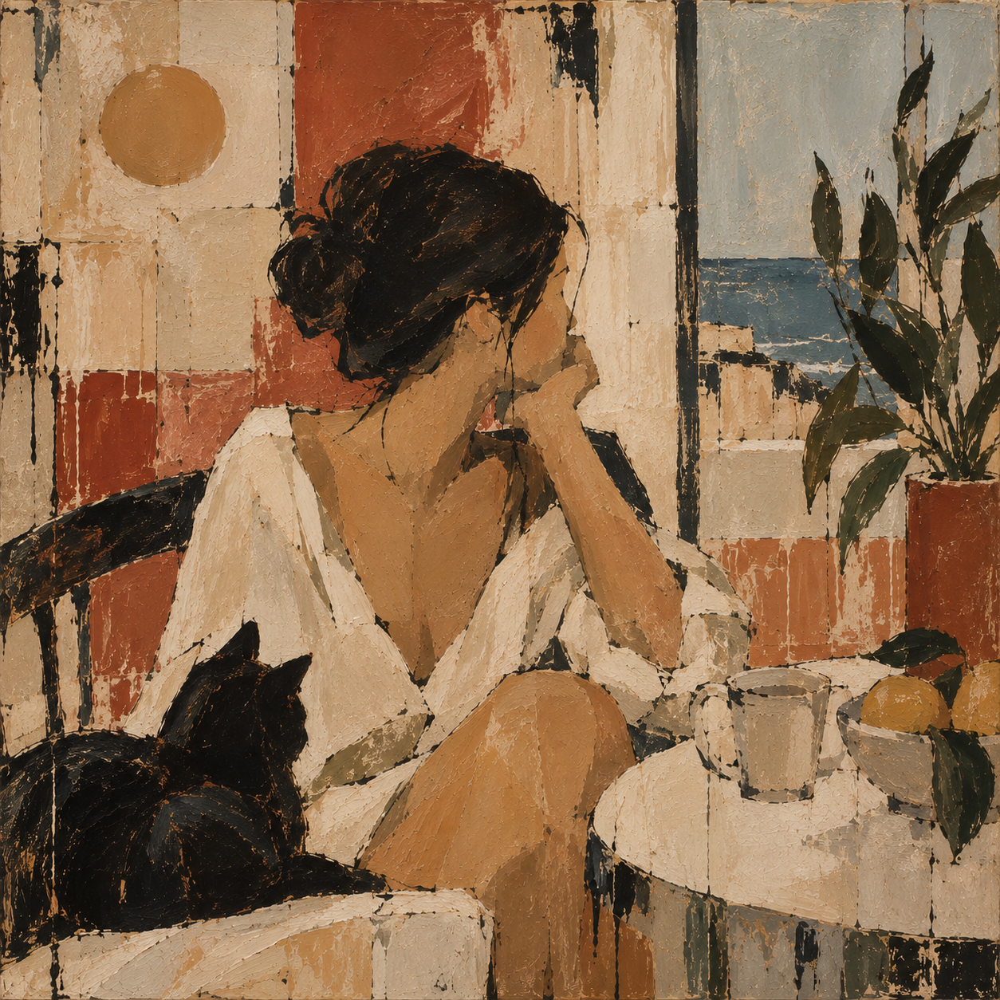

Mara Solari
Art made of memory, body & belonging.
MARA SOLARI / VISUAL ARTIST

SELECTED WORKS

The Weight of Summer
Oil in canvas . 2026

Quiet Geometry
Oil in canvas . 2026

After the Garden
Oil in Canvas . 2026

Things we Carry
Oil in canvas . 2026
"I paint the things we carry long after we have forgotten their names."
Mara Solari
View the collection